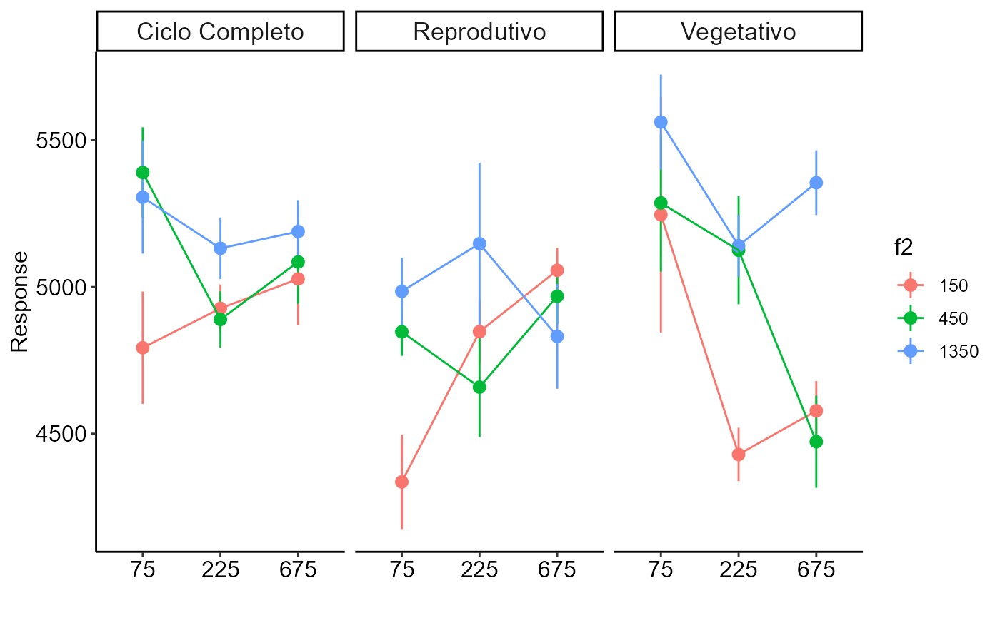

desc3fat.RdPerforms the descriptive graphical analysis of an experiment with three factors of interest.
desc3fat(
f1,
f2,
f3,
response,
legend.title = "Legend",
xlab = "",
ylab = "Response",
theme = theme_classic(),
plot = "interaction"
)Numeric or complex vector with factor 1 levels
Numeric or complex vector with factor 2 levels
Numeric or complex vector with factor 3 levels
Numerical vector containing the response of the experiment.
Legend title
x name (Accepts the expression() function)
Variable response name (Accepts the expression() function)
ggplot theme
"interaction" or "box"
The function returns a triple interaction graph.
library(AgroR)
data(enxofre)
with(enxofre, desc3fat(f1, f2, f3, resp))
#>
#> -----------------------------------------------------------------
#> General description
#> -----------------------------------------------------------------
#> Mean Median Min Max Variance SD CV(%)
#> 4985.604 4975.775 4012.14 6203.5 172705.4 415.5784 8.335568
#>
#> -----------------------------------------------------------------
#> F1
#> -----------------------------------------------------------------
#> Mean Median Min Max Variance SD CV(%)
#> 75 5083.450 5028.025 4012.14 6203.50 263382.8 513.2084 10.095670
#> 225 4921.823 4922.490 4225.38 5809.20 124860.9 353.3566 7.179384
#> 675 4951.540 4996.675 4150.44 5680.55 124516.3 352.8687 7.126444
#>
#> -----------------------------------------------------------------
#> F2
#> -----------------------------------------------------------------
#> Mean Median Min Max Variance SD CV(%)
#> 150 4804.546 4775.700 4012.14 6203.50 184134.8 429.1093 8.931319
#> 450 4969.199 4922.660 4150.44 5801.99 150227.6 387.5920 7.799889
#> 1350 5183.069 5182.245 4481.23 5816.80 119520.8 345.7178 6.670136
#>
#> -----------------------------------------------------------------
#> F3
#> -----------------------------------------------------------------
#> Mean Median Min Max Variance SD CV(%)
#> Ciclo Completo 5081.969 5066.785 4251.00 5715.76 97030.46 311.4971 6.129458
#> Reprodutivo 4853.145 4907.800 4012.14 5809.20 124804.19 353.2764 7.279328
#> Vegetativo 5021.699 4981.630 4150.44 6203.50 277212.38 526.5096 10.484690
#>
#> -----------------------------------------------------------------
#> Interaction
#> -----------------------------------------------------------------
#> Mean Median Min Max Variance SD
#> 225 1350 Ciclo Completo 5131.625 5135.210 4928.01 5328.07 44045.53 209.8703
#> 225 1350 Reprodutivo 5147.488 5126.315 4528.12 5809.20 303979.30 551.3432
#> 225 1350 Vegetativo 5140.382 5078.765 4978.33 5425.67 44284.47 210.4388
#> 225 150 Ciclo Completo 4927.000 4972.020 4697.29 5066.67 26475.47 162.7128
#> 225 150 Reprodutivo 4847.748 4785.505 4663.26 5156.72 46886.15 216.5321
#> 225 150 Vegetativo 4429.288 4379.745 4274.16 4683.50 33113.39 181.9708
#> 225 450 Ciclo Completo 4889.233 4895.100 4649.63 5117.10 36479.09 190.9950
#> 225 450 Reprodutivo 4658.573 4732.970 4225.38 4942.97 115773.22 340.2546
#> 225 450 Vegetativo 5125.075 5093.860 4765.79 5546.79 135688.18 368.3588
#> 675 1350 Ciclo Completo 5188.823 5190.315 4949.13 5425.53 45933.24 214.3204
#> 675 1350 Reprodutivo 4831.542 4810.595 4481.23 5223.75 127418.26 356.9569
#> 675 1350 Vegetativo 5355.302 5274.385 5191.89 5680.55 48643.48 220.5527
#> 675 150 Ciclo Completo 5027.233 5105.545 4580.18 5317.66 99818.88 315.9413
#> 675 150 Reprodutivo 5056.610 5080.930 4860.37 5204.21 23332.19 152.7488
#> 675 150 Vegetativo 4578.007 4563.825 4377.19 4807.19 40967.71 202.4048
#> 675 450 Ciclo Completo 5085.130 5035.945 4808.97 5459.66 81509.59 285.4988
#> 675 450 Reprodutivo 4968.540 4939.290 4770.88 5224.70 36448.71 190.9155
#> 675 450 Vegetativo 4472.670 4460.015 4150.44 4820.21 98653.19 314.0910
#> 75 1350 Ciclo Completo 5305.762 5345.090 4859.00 5673.87 147384.02 383.9063
#> 75 1350 Reprodutivo 4984.855 5008.470 4687.26 5235.22 52243.96 228.5694
#> 75 1350 Vegetativo 5561.840 5661.725 5107.11 5816.80 104726.07 323.6141
#> 75 150 Ciclo Completo 4792.932 4897.290 4251.00 5126.15 146549.05 382.8173
#> 75 150 Reprodutivo 4335.730 4353.685 4012.14 4623.41 103343.11 321.4702
#> 75 150 Vegetativo 5246.363 5107.965 4566.02 6203.50 644752.49 802.9648
#> 75 450 Ciclo Completo 5389.980 5431.920 4980.32 5715.76 95095.62 308.3758
#> 75 450 Reprodutivo 4847.222 4861.975 4664.11 5000.83 26881.76 163.9566
#> 75 450 Vegetativo 5286.368 5337.715 4668.05 5801.99 219868.17 468.9010
#> CV(%)
#> 225 1350 Ciclo Completo 4.089743
#> 225 1350 Reprodutivo 10.710918
#> 225 1350 Vegetativo 4.093835
#> 225 150 Ciclo Completo 3.302473
#> 225 150 Reprodutivo 4.466654
#> 225 150 Vegetativo 4.108355
#> 225 450 Ciclo Completo 3.906441
#> 225 450 Reprodutivo 7.303839
#> 225 450 Vegetativo 7.187383
#> 675 1350 Ciclo Completo 4.130425
#> 675 1350 Reprodutivo 7.388054
#> 675 1350 Vegetativo 4.118398
#> 675 150 Ciclo Completo 6.284596
#> 675 150 Reprodutivo 3.020774
#> 675 150 Vegetativo 4.421243
#> 675 450 Ciclo Completo 5.614386
#> 675 450 Reprodutivo 3.842486
#> 675 450 Vegetativo 7.022451
#> 75 1350 Ciclo Completo 7.235647
#> 75 1350 Reprodutivo 4.585276
#> 75 1350 Vegetativo 5.818472
#> 75 150 Ciclo Completo 7.987120
#> 75 150 Reprodutivo 7.414443
#> 75 150 Vegetativo 15.305172
#> 75 450 Ciclo Completo 5.721279
#> 75 450 Reprodutivo 3.382485
#> 75 450 Vegetativo 8.870004
#> Warning: Computation failed in `stat_summary()`:
#> object 'mean_se' of mode 'function' was not found
#> Warning: Computation failed in `stat_summary()`:
#> object 'mean_se' of mode 'function' was not found
#> Warning: Computation failed in `stat_summary()`:
#> object 'mean_se' of mode 'function' was not found
#> Warning: Computation failed in `stat_summary()`:
#> object 'mean_se' of mode 'function' was not found
#> Warning: Computation failed in `stat_summary()`:
#> object 'mean_se' of mode 'function' was not found
#> Warning: Computation failed in `stat_summary()`:
#> object 'mean_se' of mode 'function' was not found
